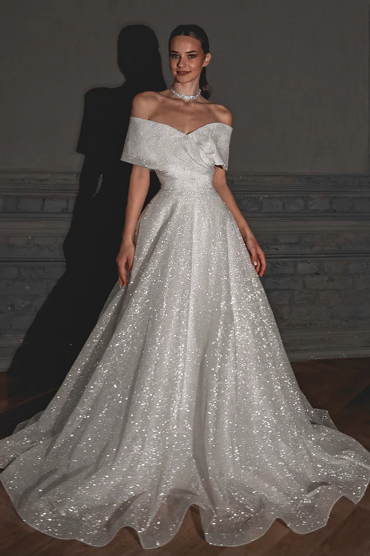
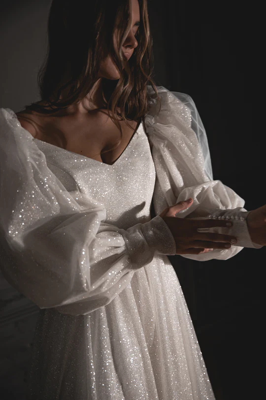
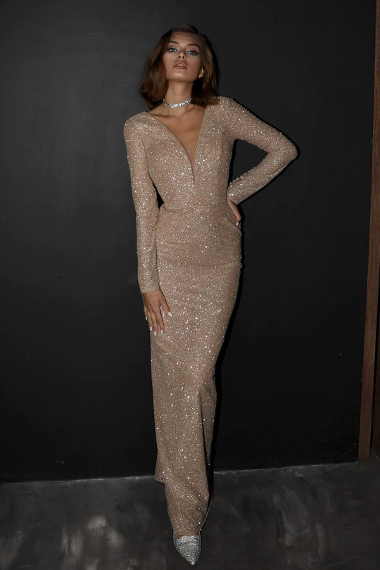

WEDDING DRESS
Explore our latest bridal collection, designed to make your special day even more magical. From stunning wedding dresses to elegant accessories, our new collection has everything you need to create the perfect bridal look.
EXPLORE WEDDING DRESS

ACCESSORIES
Bride accessories are essential to complete a bride's wedding day look. These accessories add elegance and personality to the bridal ensemble, allowing brides to customize their look to match their style and wedding theme.
EXPLORE ACCESSORIES

FORMAL DRESS
Formal dress at weddings typically refers to the attire worn by guests. Guests are expected to wear elegant and sophisticated clothing, often adhering to a dress code specified by the couple.
EXPLORE FORMAL DRESS